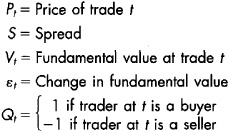
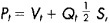
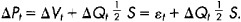
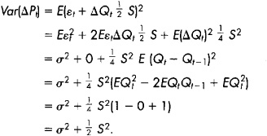
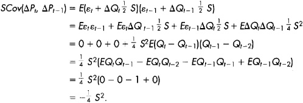
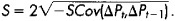

Chapter 20: Volatility
Volatility is the tendency for prices to change unexpectedly. Prices change in response to new information about values and in response to the demands of impatient traders for liquidity.
Volatility itself changes through time. Sometimes prices are very volatile. Other times, prices are very stable and hardly change at all. Large price changes sometimes occur in short time intervals. Regulators and traders refer to episodes of such price changes as episodic volatility. Episodic volatility concerns many people because it can be quite scary.
Volatility, risk, and profit are closely related. Every drop in prices creates losses for traders who have long positions and profits for traders with short positions. Likewise, every price rise causes losses for traders with short positions and profits for traders with long positions. Traders therefore are very interested in volatility because it can have a significant impact on their wealth. If risk scares you or profits interest you, you need to know about volatility.
Volatility especially concerns options traders. Option contract values depend critically on the volatility of the underlying instrument. Options traders must be able to measure and predict volatilities in order to trade profitably. Both skills require that they understand well the origins of volatility.
Technical traders who try to interpret trading volumes also pay close attention to volatility because volumes and volatility are often correlated. The relation between the two variables is not simple, however. It depends on the origins of the volatility.
Volatility greatly concerns regulators. Excessive volatility may indicate that markets are not functioning well. Since accurate prices are extremely important in the economy, regulators pay close attention to the markets when prices are highly volatile. They are especially attentive when markets crash.
In this chapter, we identify the origins of volatility and distinguish between its two types. Fundamental volatility is due to unanticipated changes in instrument values, and transitory volatility is due to trading activity by uninformed traders.
The distinction is important both for traders and for regulators. Traders must distinguish between the two volatility types in order to accurately predict future volatility, the profitability of dealing strategies, and transaction costs. Regulators must distinguish between them because they cannot have any lasting effect on fundamental volatility, but they often can substantially affect transitory volatility. Depending on the policies that regulators adopt, they may decrease or increase transitory volatility.
We start this short chapter with discussions about the origins of the two types of volatility. We then finish by considering how to distinguish between them. Chapter 28 considers what regulators can do about volatility when it appears excessive to them.
20.1 FUNDAMENTAL VOLATILITY
Since economies use prices to allocate resources, it is very important that prices reflect fundamental values. Values change when the fundamental factors that determine them change. Prices therefore should change when people learn that fundamental factors have unexpectedly changed. Such price changes contribute to fundamental volatility.
When new information about changes in fundamental values is common knowledge, prices may change without any trading. For example, suppose that an unexpected killer frost descends upon Florida overnight. The morning news will undoubtedly report the event. The next day, orange juice futures contracts will open at a much higher price than the last price of the previous trading day.
When only a few people know new information about changes in fundamental values, prices generally will change on high trading volumes. The well-informed traders will trade on their information. The pressures their trades put on prices will cause prices to change to reflect the new fundamental values.
Since informed traders generally hurt dealers, and since dealers generally do not know when they trade with informed traders, dealers try to infer information about fundamental values from their order flows. The inferences that they make contribute to the adverse selection spread component introduced in chapter 13. Price changes due to the adverse selection spread component thus contribute to fundamental volatility.
2.1.1 Fundamental Volatility Factors
Any factor that determines the value of a trading instrument can cause the price of that instrument to change. For a commodity, the most important factors are cash market supply and demand conditions. Other important factors are interest rates and storage costs. For a bond, the most important factors are interest rates and the credit quality of the issuer. For a stock, the most important factors are quality of management, the values of the company's resources and technologies, the supply and demand conditions in its product markets and in its input markets, and interest rates. For currencies, the important valuation factors include national inflation rates, macroeconomic policies, and trade and capital flows. Unexpected changes in any of these factors generate fundamental volatility in the instrument.
2.1.2 Predictability
Expected changes in fundamental factors generally do not change prices. Informative prices usually fully incorporate all available information about future values. Since people base their expectations on existing information, fully informative prices will already incorporate expected changes in fundamental factors. When the expected event occurs, it is not surprising, and it therefore should not cause prices to change. Only unexpected events cause fundamental price volatility. Consequently, the identifying characteristic of fundamental volatility in fully informative prices is unpredictable price changes. An unpredictable price process is called a random walk. Chapter 10 provides a more complete explanation of the properties of fully informative prices.
Gasoline, Diesel Fuel, and Heating Oil Volatility
Gasoline, diesel fuel, and heating oil are expensive to store because they require very large tanks. The available producer storage in the United States amounts to only 9 days of consumption of gasoline and 18 days of distillate fuels (heating oil and diesel fuel). Since the demands for these fuels are highly inelastic, unexpected fluctuations in demand caused by weather, refinery accidents, or changes in the economy often cause substantial variation in the prices of these commodities.
Source: Year 2000 consumption and refinery working storage capacity data obtained from the Energy Information Administration, U.S. Department of Energy, at [www.eia.doe.gov].
The one exception to this rule involves price changes that are necessary to compensate instrument holders for their carrying costs and for bearing risk. For example, the prices of zero-coupon bonds creep upward over time as they approach maturity. Since they pay no interest, investors buy them at substantial discounts to their face values. The creep in prices compensates them for the interest payments that they would have received if they had invested in a straight bond. These creeping price changes are fully predictable, and therefore do not contribute to fundamental volatility. Note, however, that if interest rates unexpectedly fall, the prices of zero-coupon bonds will immediately rise to reflect the new interest rates. This unexpected price change would contribute to fundamental volatility.
2.1.3 Storage Costs
Commodities that are expensive to store are often quite volatile. The high storage costs ensure that producers and distributors generally will not hold large inventories. When demand exceeds supply, buyers can quickly deplete inventories. Prices then spike up until new production can relieve the shortage. Conversely, when inventories are large and new products will soon arrive, distributors may greatly discount the inventory to make room for the new arrivals.
Price volatility in high-storage-cost commodities depends on the time it takes to adjust the flow of product from producers to consumers. If the production pipeline is quite long, so that adjustments take a long time, prices may be quite volatile.
Price volatility in high-storage-cost commodities also depends on demand variation. When demand is highly variable, inventory imbalances may often occur. Production and distribution may be unable to adjust as quickly as demand changes. For low-storage-cost commodities, inventories generally buffer mismatches in the rates of production and consumption, so that prices are more stable.
Finally, price volatility in high-storage-cost commodities also depends on whether people can easily do without those commodities. If the demand is highly inelastic, people will demand approximately the same quantities at any price. Such goods often experience sharp price spikes when shortages develop.
Perishable goods are goods that become worthless if they are not used before they spoil or expire. The prices of perishable goods are often especially volatile because they cannot be stored indefinitely. Where a surplus of soon-to-perish goods exists, prices fall very quickly as their owners try to avoid a complete loss. If a shortage of perishable goods develops, prices may rise very quickly.
2.1.4 Fundamental Uncertainties
Uncertain knowledge about fundamental factors often causes substantial fundamental volatility. The stocks of companies involved in technological research tend to be highly volatile because their values depend critically upon the outcomes of their research and upon the markets for products that presently do not exist. Since even the best-informed traders have little information about these issues, the prices of technology stocks tend to vary substantially when new information arrives or when analysts develop new valuation models.
Electrifying Moments in California
Electricity is the ultimate perishable commodity because it is extremely expensive to store. Most electricity is either used as it is produced or lost forever. The spot market for electricity therefore is extremely volatile. California experienced an extreme example of this volatility in 2000-2001 when the price of electricity occasionally spiked dramatically upward for short periods when people demanded more electricity than generators could supply.
Generally, companies with high price to earnings (P/E) ratios tend to have volatile stocks. Most of these companies have high prices because people expect that their earnings will grow substantially through time. These growth expectations, however, generally depend on many future fundamental uncertainties. These uncertainties make high P/E stocks more volatile than low P/E stocks.
Instruments that are subject to substantial political risks likewise are quite volatile. Political risks are risks associated with government actions. For example, the prices of sovereign debt bonds in emerging markets depend on whether issuing governments will default on their debts and on whether they will inflate their money supplies to depreciate the real values of their bonds. The prices of firms in industries that may be subject to nationalization or to substantial government regulation likewise are quite volatile. The extreme example of political risk is war. Wars have completely destroyed the capital assets of many countries throughout the ages. Although governments generally can control the political risks upon which many security values depend, they often choose not to, in favor of other objectives.
Highly leveraged firms tend to have very volatile stocks because the ownership of their assets is divided between bondholders and equity holders. Since the equity holders must pay off the bondholders before they can benefit from the assets, equity holders bear most of the volatility in the asset values. Where there is little equity relative to debt, small changes in asset values will cause large changes in equity values.
20.2 TRANSITORY VOLATILITY
Transitory volatility results when the demands of impatient uninformed traders cause prices to diverge from fundamental values. These price changes are transitory because prices eventually revert to fundamental values.
Fundamental Volatility in Perishable Commodity Prices
Price changes for perishable commodities often display extreme negative serial correlation because prices often spike up when shortages occur or collapse when surpluses occur. A casual observer may attribute this negative serial correlation to transitory volatility.
Such attributions, however, can be wildly mistaken. A sequence of spot prices is not a sequence of prices for the same item. It is a sequence of prices for a sequence of items that differ by their date of delivery. For example, the spot price of fish on Monday is the price of fish for Monday delivery. The Tuesday spot price of fish is for Tuesday delivery, and so on.
The sequence of spot prices can be highly negatively correlated when storage costs are high. The negative correlation reflects variations in fundamental factors over time as they affect delivery on different dates.
Many commodities have futures contracts written on them. These contracts price the delivery of the commodity on a specific day. When the underlying commodity is highly perishable, price changes in the futures contracts will not have nearly as much negative serial correlation as will price changes in the spot contract. Negative serial correlation in these contracts generally will be due primarily to transitory volatility. Negative serial correlation in the spot prices may be due either to changes in fundamentals across delivery dates or to transitory volatility.
The simplest form of transitory volatility is bid/ask bounce. Bid/ask bounce occurs when market order traders buy at the ask and sell at the bid. Their trades cause prices to bounce from bid to ask. These price changes reverse when traders arrive on the other side of the market. The transaction cost component of the bid/ask spread is responsible for bid/ask bounce. This spread component---which is also called the transitory spread component---therefore contributes to transitory volatility.
Large orders and cumulative order imbalances created by uninformed traders also cause prices to move from their fundamental values. The price changes reverse when value traders or arbitrageurs recognize that prices differ from fundamental values. Their trades then push prices back.
Transitory volatility includes both the price changes that impatient uninformed traders cause and the subsequent reversals of those price changes. Value traders, arbitrageurs, and dealers do not cause transitory volatility, but they do contribute to its ultimate resolution.
Transitory volatility and the transaction costs of uninformed traders are very closely correlated. The impacts that uninformed traders have on prices are transaction costs that they bear. These price changes contribute to transitory volatility. Transitory volatility therefore is small in liquid markets.
Regulators are very concerned about transitory volatility because high transitory volatility indicates that markets are illiquid. When volatility is high, people often pressure regulators to intervene to decrease it. Before doing so, regulators must be confident that the high volatility is due to the transitory component of volatility and not to its fundamental component.
20.3 MEASURING VOLATILITY AND ITS COMPONENTS
Total volatility is the sum of fundamental volatility and transitory volatility. People generally measure total volatility by using variances, standard deviations, or mean absolute deviations of price changes. The variance of a set of price changes is the average squared difference between the price change and the average price change. The standard deviation is the square root of the variance. The mean absolute deviation is the average absolute difference between the price change and the average price change.
Statistical models are necessary to identify and estimate the two components of total volatility. These models exploit the primary distinguishing characteristics of the two types of volatility: Fundamental volatility consists of seemingly random price changes that do not revert, whereas transitory volatility consists of price changes that ultimately revert. The transitory price changes are generally correlated with order flows of uninformed liquidity-demanding traders. Fundamental price changes may be correlated with order flows of informed traders, but need not be.
The reversion of transitory price changes causes price changes to be negatively correlated. In particular, increases tend to follow decreases and vice versa, so that price reversals are more common than price continuations. The presence of negative serial correlation in price series is therefore a strong indicator of transitory volatility.
Transaction-induced negative serial correlation in price changes may appear over various horizons. Bid/ask bounce causes negative serial correlation in transaction-to-transaction price changes. The price impacts of large orders and of order imbalances generated by uninformed traders may cause negative price change serial correlation measured over minutes, hours, days, or even months.
Roll's Serial Covariance Spread Estimator Model
For readers who would feel unfulfilled learning economics without the use of some abstract notation, I offer the following analysis of Roll's serial covariance spread estimator model. (All other readers can safely skip this.)
Let

Assume that
• Fundamental value follows a random walk so that the value innovation ε~†~, is independently distributed through time.
• The value innovation ε~†~ has zero mean and variance σ^2^.
• The probability that the trader at † a buyer is one-half.
• The probability that the trader at † is a buyer is independent of whether any previous trader was a buyer.
• The probability that trader † is a buyer is independent of ε~†~ and ε~†+1~
Let price at time † equal fundamental value plus or minus one-half of the spread depending on whether the tth trader is a buyer or a seller:

so that the price change is

These assumptions imply that the price change variance is

The two terms are the fundamental and transitory volatility components.
Roll showed that we can estimate the latter term from the expected serial covariance. It is

Inverting this expression gives

Roll's serial covariance spread estimator substitutes the sample serial covariance for the expected serial covariance in this last expression.
The simplest statistical model that can estimate these variance components is Roll's serial covariance spread estimator model. Roll analyzed this simple model to create a simple serial covariance estimator of bid/ask spreads. The model assumes that fundamental values follow a random walk, and that observed prices are equal to fundamental value plus or minus half of the bid/ask spread. Total variance in this model is therefore the sum of variance due to changes in fundamental values and of variance due to bid/ask bounce. In the model, the latter variance is proportional to the square of the spread. The two components can be estimated from estimates of the total price change variance and of the serial covariance of price changes.
The main limitation of Roll's model is that it predicts that only adjacent price changes will be negatively correlated. If the reversion of prices takes longer than one transaction, price changes beyond the next one also will be negatively correlated with the current price change. Variance component estimates based on Roll's model therefore underestimate transitory volatility.
More complex variance component models identify transitory volatility by using various statistical methods that can decompose a series into a random walk component and a mean-reverting component that may have negative serial correlation over many intervals. These methods are quite complex, and well beyond the scope of this book.
20.4 SUMMARY
Traders pay close attention to volatility because price changes affect their profits and losses. Periods of high volatility are highly risky to traders. Such periods, however, also can present them with opportunities for great profits.
Regulators pay close attention to volatility because one form of volatility---transitory volatility---is correlated with transaction costs. Regulators generally try to create liquid markets that produce highly informative prices. High volatility suggests to them---and to many others---that markets need to be fixed. We discuss the regulatory responses to extreme volatility in chapter 28.
20.5 SOME POINTS TO REMEMBER
• Fundamental volatility is due to unexpected changes in fundamental valuation factors.
• Fundamental price changes are correlated with volume when only a few traders know new information about fundamental values. When such information is common knowledge, prices can change on little or no volume.
• Fundamental volatility may be scary, but it is necessary for the efficient allocation of resources.
• Prices must change as the world changes if they are to reflect all current information about instrument values.
• Transitory volatility consists of price changes caused when impatient uninformed traders seek liquidity.
• Transitory volatility and transaction costs are closely related. Both are high in illiquid markets.
• The price changes associated with transitory volatility tend to revert. Price reversion causes negative correlation in a price change series.
• Transitory volatility is identified by the negative serial correlation due to price reversals.
20.6 QUESTIONS FOR THOUGHT
• What are the relations among liquidity, transaction costs, and transitory volatility?
• To which volatility components do the adverse selection and transaction cost spread components contribute?
• To which volatility component do the price impacts of news traders contribute? To which volatility component do the price impacts of value traders contribute?
• What causes volatility to vary over time? How would you measure time-varying volatilities?
• Why are absolute price changes correlated with volumes? Under what circumstances would you expect the correlation to be strongest?
• Suppose that people trade---and prices change---whenever news arrives in the market. If the number of news events occurring each day were constant, would absolute price changes and volume be correlated? How would your answer be different if the number of news events varied each day?
• One interpretation of episodic volatility is that it occurs when the flow of information quickly increases. If this were a complete explanation of episodic volatility, would we still care about episodic volatility?
• How would Roll's serial covariance spread estimator be different if the spread were a random variable with a constant mean and variance, distributed independently through time and independently of all other variables?
Part VI: Evaluation and Prediction
In the next two chapters, we consider how traders measure and predict portfolio performance. Traders need to monitor their performance so that they can determine what they are doing well and what they are doing poorly. They then can better manage their trading. As a rule, you cannot manage what you cannot measure.
How well a portfolio performs depends on the instruments that are in the portfolio and upon the costs of constructing and maintaining the portfolio. The problem of choosing the best instruments to maximize portfolio performance is the portfolio selection/composition problem. The problem of implementing portfolio composition decisions is the portfolio implementation problem. Traders must obtain good solutions to both problems in order to perform well.
In practice, few profit-motivated traders consistently outperform the market. Most active traders lose because they trade too much and because they pay too much to trade. The costs of trading eventually overwhelm any informational advantages they may have. Traders therefore must understand their trading costs.
In chapter 21, we focus first on measuring and predicting implementation performance. For most traders, the portfolio implementation problem is easier to solve than the selection/composition problem. Because most traders cannot consistently outperform the market, the implementation problem is their more important problem. In chapter 22, we consider why superior selection/composition performance is difficult to achieve and even more difficult to predict.